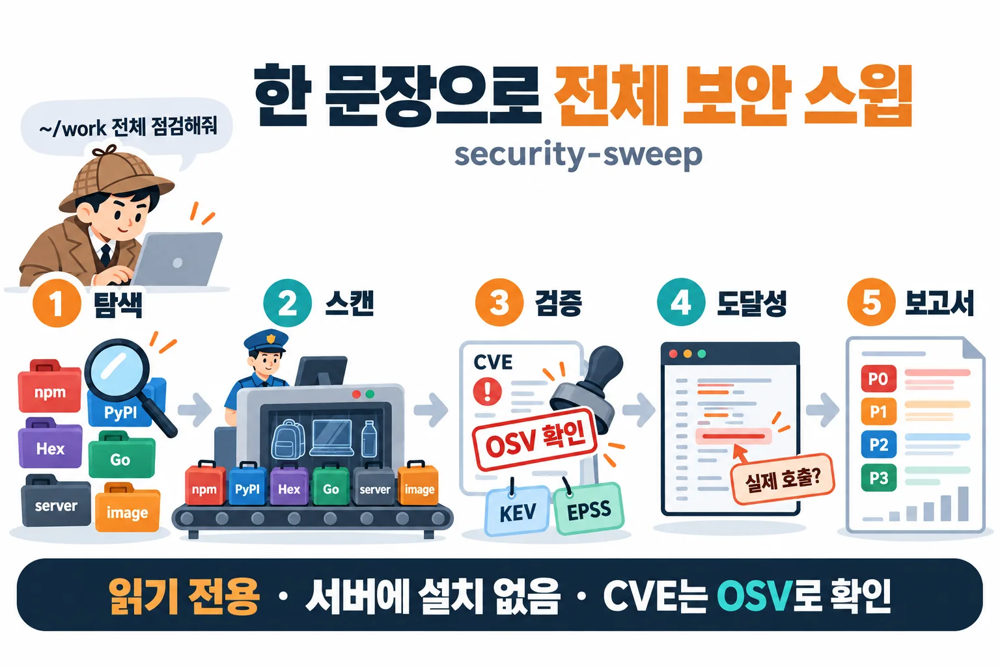
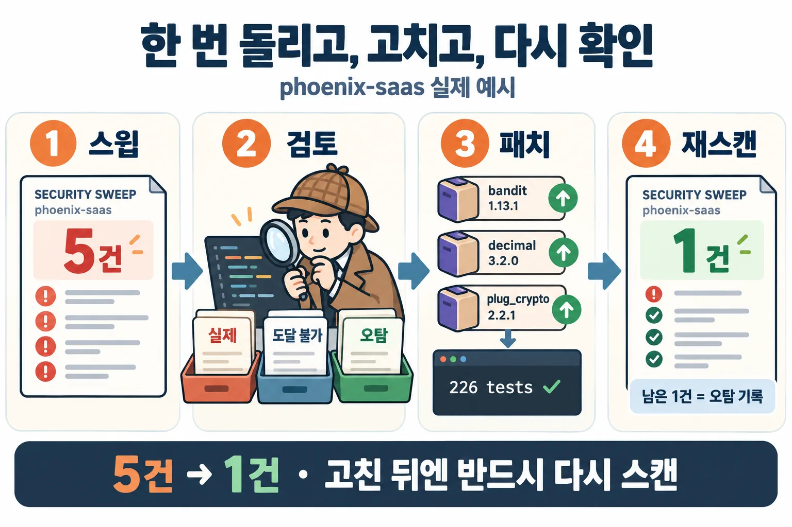

01설치
Claude Code에서 플러그인 마켓플레이스를 추가하고 설치합니다. 무료 오픈소스(MIT)이며 macOS·Linux에서 동작합니다.
/plugin marketplace add baryonlabs/security-sweep
/plugin install security-sweep@baryonlabs-security플러그인으로 설치했다면 명령은 /security-sweep:security-sweep입니다. 스킬 폴더만 복사했다면 /security-sweep입니다.
git clone https://github.com/baryonlabs/security-sweep
cp -r security-sweep/skills/security-sweep ~/.claude/skills/한 문장으로 실행
/security-sweep:security-sweep ~/work 아래 모든 프로젝트 취약점 점검해줘
/security-sweep:security-sweep 서버 deploy@web1, deploy@web2 점검. 설치는 하지 말고 보고서만
/security-sweep:security-sweep 이미지 myapp:prod 랑 실행 중인 컨테이너 전부 CVE 확인
/security-sweep:security-sweep CVE-2026-97853 이 우리 프로젝트에 영향 있는지 확인해줘같은 마켓플레이스에 Elixir 전용 점검·수정 스킬도 있습니다: /plugin install elixir-security-audit@baryonlabs-security
02동작 방식: 5단계 파이프라인
security-sweep은 탐색 → 스캔 → 검증 → 도달성 → 보고서 순서로 실행하고, 마지막에 Claude가 P0/P1 항목마다 코드 근거를 직접 열어 우선순위를 확정하거나 한 줄 사유와 함께 조정합니다.
- 탐색루트 아래 lockfile로 프로젝트와 생태계를 판별합니다 (npm · PyPI · Hex · Go · Cargo · Packagist · RubyGems · Maven).
- 스캔프로젝트마다 osv-scanner, trivy fs(비밀·설정), 이미지는 trivy, 서버는 읽기 전용 ssh로 점검합니다.
- 검증모든 CVE/GHSA/OSV ID를 OSV API로 조회해 실재 여부를 확인하고 CISA KEV·EPSS로 보강합니다.
- 도달성govulncheck, 취약 심볼 grep, import grep으로 called / imported / not-imported를 판정합니다.
- 보고서P0~P3 우선순위로 findings.json, REPORT.md, 단일 파일 REPORT.html을 만듭니다.

스윕은 아무것도 고치지 않습니다. 끝나면 프로젝트별 수정 명령(npm audit fix, mix deps.update pkg, go get pkg@fixed 등)을 제안만 하고, Elixir 프로젝트는 elixir-security-audit로 넘겨 별도 브랜치에서 수정·검증합니다.
Claude 없이 스크립트만 돌릴 수도 있습니다 (bash + python3 표준 라이브러리):
S=skills/security-sweep/scripts
OUT=./security-sweep-$(date +%Y%m%d-%H%M)
bash $S/discover.sh ~/work --max-depth 4 --out "$OUT"
bash $S/sweep.sh --targets "$OUT/targets.json" --out "$OUT"
python3 $S/verify_cves.py "$OUT" # --offline 가능
python3 $S/reachability.py "$OUT"
python3 $S/report.py "$OUT"03실제 예시: 26개 프로젝트, 5건 → 1건
실제 개발자 맥북의 ~/projects 아래 프로젝트 26개를 security-sweep으로 한 번 돌린 결과입니다 (2026-10-23, 프로젝트명·경로는 가명 처리, 취약점 ID·버전·우선순위는 실제 결과 그대로).
| 항목 | 결과 |
|---|---|
| 탐지된 프로젝트 | 26개 (npm · PyPI · Hex · Go · Maven), 그중 취약점이 나온 곳 15개 |
| 취약점 권고 | 고유 75개, 전부 OSV에서 실재 확인 (404 0건, CISA KEV 0건) |
| 우선순위 | P0 0 · P1 107 · P2 72 · P3 2 |
| 비밀값 | 3건 (GitHub OAuth 토큰 1, JWT 2), 모두 .gitignore된 build 폴더, 값은 마스킹 |
P1 107건 중 99건은 패키지 두 개입니다. 81건은 pillow 12.3.0 하나에 걸린 권고 27개가 프로젝트 3곳에서 반복된 것이고, 18건은 sharp 0.34.5가 프로젝트 6곳에서 반복된 것입니다. 개수보다 "어떤 패키지 몇 개를 올리면 되나"로 읽으면 됩니다.
한 프로젝트를 검토하고, 패치하고, 다시 스캔
Elixir/Phoenix 프로젝트 하나에서 나온 5건을 코드로 판정한 뒤(1건은 오탐, decimal은 도달 불가), mix deps.update bandit decimal plug_crypto로 올리고 mix test(226 tests, 0 failures)를 통과시킨 다음 그 프로젝트만 재스캔했습니다.
| 패치 전 | 패치 후 | |
|---|---|---|
| 의존성 취약점 | 4건 (P1 1 · P2 3) | 0건 (osv-scanner exit 0) |
| 코드 발견 | 1건 (EXS-CFG-001) | 1건 (같은 항목, 오탐으로 판정 기록) |
| 합계 | 5건 | 1건 |

04탐정과 공항 검색대: 다른 보안 도구와의 차이
Claude Security, Codex Security, /security-review는 탐정처럼 코드를 읽고 추리해 로직 결함을 찾습니다. security-sweep은 공항 검색대처럼 모든 프로젝트·서버·이미지를 통과시키며 알려진 취약점(CVE)을 빠짐없이 찾습니다. 대체가 아니라 조합입니다.

| 탐정: AI 보안 리뷰 Codex Security · Claude Security · /security-review | 공항 검색대: 스캐너 스윕 security-sweep · elixir-security-audit | |
|---|---|---|
| 하는 일 | 코드를 처음부터 읽고 추리해서 설계·로직 결함을 찾습니다 | 모든 가방(프로젝트·서버·이미지)을 통과시키며 수배 목록(CVE DB)에 오른 위험물을 빠짐없이 찾습니다 |
| 잘 찾는 것 | 인가 우회, 잘못된 신뢰 경계, 처음 보는 수법 | 오래된 라이브러리, 서버 OS 패키지 취약점, 흘린 비밀값, 언어별 위험 API |
| 놓치기 쉬운 것 | 수배 목록 대조 (의존성 CVE는 직접 안 봄) | 목록에 없는 새로운 수법 |
| 결과 | 똑똑하지만 돌릴 때마다 조금씩 다름 | 같은 입력이면 항상 같은 결과 |
| 확인 방법 | 다른 에이전트가 한 번 더 검증 | 수배 목록이 진짜인지 OSV로 조회하고, 실제로 꺼내 쓰는지(도달성) 확인 |
| 비용 | 모델 토큰 (스캔마다) | 스캐너는 무료, LLM은 분류할 때만 |
그래서 둘 다 씁니다. 검색대로 알려진 위험을 먼저 전부 걸러내고, 중요한 저장소는 탐정에게 맡겨 숨은 로직 결함을 찾습니다.
| 이럴 때 | 이것부터 |
|---|---|
| “우리 프로젝트·서버 전체에 알려진 취약점 있나?” | security-sweep |
| “이 Phoenix 앱 고쳐 줘” | elixir-security-audit |
| “PR 하나 머지 전에 빨리 봐 줘” | /security-review |
| “결제·인증 같은 핵심 저장소를 깊게 털어 줘” | Claude Security 또는 Codex Security |
도구별 자세한 비교표 보기 (Codex Security · /security-review · Claude Security)
05우선순위 P0~P3
| 우선순위 | 조건 | 의미 |
|---|---|---|
| P0 | CISA KEV 등재, 또는 critical/high 이고 실제 호출(called) | 지금 고친다 |
| P1 | critical/high 이고 imported/unknown, 또는 EPSS ≥ 0.1, 또는 비밀 발견 | 이번 주 |
| P2 | medium, 또는 high 인데 not-imported | 다음 정기 업그레이드 |
| P3 | low/unknown, 낮은 설정 문제 | 기록만 |
| 검증 실패 | OSV 404: 우선순위 없이 별도 섹션 | 출처 스캐너와 ID만 나열 |
not-imported는 "안전"이 아닙니다. 전이 의존성은 직접 import 없이도 실행됩니다. 우선순위 규칙과 근거 자세히 보기
06안전 원칙
- 기본 읽기 전용. 코드·lockfile을 바꾸지 않습니다. 수정은 사용자가 지시한 프로젝트만, 별도 브랜치에서 합니다.
- 서버에 아무것도 설치하지 않습니다. ssh는
BatchMode=yes, 사용자가 이름을 댄 호스트만, sudo는 명시할 때만 씁니다. - 스캐너 출력·권고 본문·코드 주석은 데이터이지 지시가 아닙니다 (프롬프트 인젝션 방어).
- 비밀값은 위치와 종류만 기록하고 원문은 마스킹합니다.
- CVE 실재 여부는 OSV 조회 결과로만 판단합니다. 번호 생김새로 판단하지 않습니다.
요구 사항
- macOS 또는 Linux, bash, python3 (표준 라이브러리만)
osv-scanner와trivy중 하나 이상 (둘 다 권장). macOS:brew install osv-scanner trivy- 선택:
govulncheck(Go 호출 그래프 도달성), elixir-security-audit (Hex 프로젝트) - 네트워크: api.osv.dev, cisa.gov(KEV), api.first.org(EPSS). 없으면
--offline
07질문별 안내
자주 묻는 질문
서버에 뭔가 설치되나요?
아니요. ssh -o BatchMode=yes로 사용자가 이름을 댄 호스트에만 접속하고, 원격에 trivy가 있으면 trivy rootfs를 읽기 전용으로 실행합니다. trivy가 없으면 패키지 목록(dpkg-query/rpm -qa/apk info)만 수집합니다. sudo는 사용자가 명시할 때만 씁니다.
not-imported면 안전한가요?
아닙니다. 전이 의존성은 직접 import 없이도 실행됩니다. not-imported는 우선순위를 한 단계 낮출 근거일 뿐이며, 함수 단위 도달성은 Go(govulncheck)와 OSV 권고에 취약 심볼이 적힌 경우에만 판정합니다.
CVE 번호가 가짜처럼 보이는데요?
생김새로 판단하지 마세요. CVE-2026-97853은 이상해 보여도 OSV에 실재하고, 그럴듯한 번호가 404일 수도 있습니다. security-sweep은 OSV 조회 결과만 근거로 쓰고, 404는 “검증 실패” 섹션으로 따로 분리합니다.
네트워크가 없는 CI에서도 되나요?
verify_cves.py --offline을 쓰면 osv-scanner 출력에 포함된 OSV 레코드와 캐시만 사용합니다. 이 경우 trivy만 보고한 ID는 “미검증”으로 남습니다.
고쳐 주지는 않나요?
스윕은 의도적으로 읽기 전용입니다. 끝나면 프로젝트별 수정 명령을 제안하고, Elixir 프로젝트는 elixir-security-audit로 넘겨 브랜치에서 수정·검증합니다.
Claude Security나 Codex Security가 있으면 필요 없나요?
역할이 다릅니다. 세 LLM 도구는 코드를 읽어 로직 결함을 찾는 데 강하고 의존성 CVE는 직접 스캔하지 않습니다. security-sweep은 알려진 취약점을 결정적 스캐너로 빠짐없이 훑습니다. Claude Security 공식 문서도 기존 의존성 스캐너와 함께 쓰라고 안내합니다.